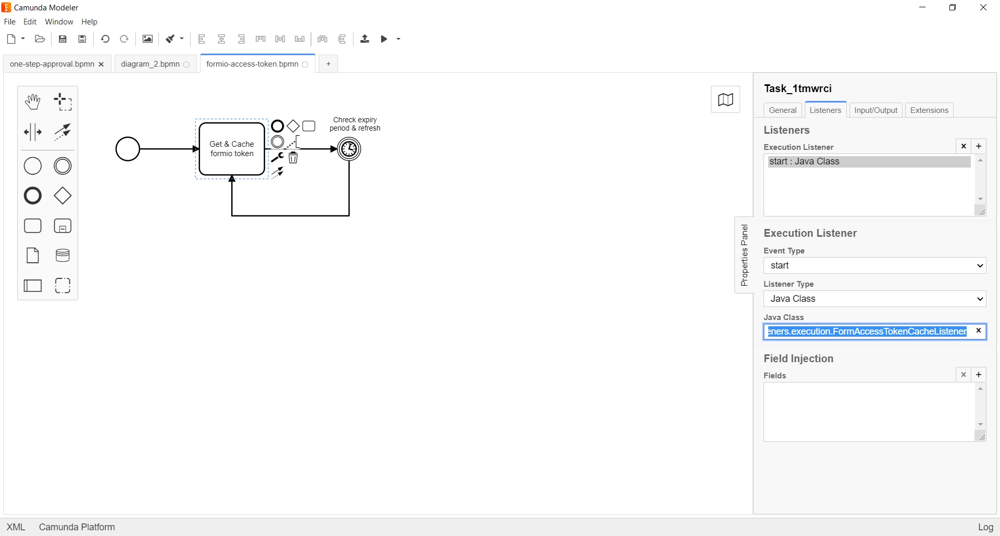

<article class="docs-article">
    <section class="docs-section" id="listeners">
        <div>
            <h2 id="form-access-token-cache-listener">Form Access Token Cache Listener</h2>
            <hr>
            <p><strong>org.camunda.bpm.extension.hooks.listeners.execution.FormAccessTokenCacheListener</strong>
            </p>
            <p>This component intended to run <strong>ONLY</strong> with the dedicated token cache
                process
                <strong>formio-access-token.bpmn</strong>.
                It generates and stores the formio token as variable in global scope.
            </p>
            <h3 id="table-of-content">Table of Content</h3>
            <ul>
                <li><a href="#type">Type</a></li>
                <li><a href="#how-it-works">How it Works</a></li>
                <li><a href="#how-to-use">How to Use</a></li>
            </ul>
            <h4 id="type">Type</h4>
            <p>Execution Listener</p>
            <h4 id="how-it-works">How it Works</h4>
            <p>This <strong>formio-access-token.bpmn</strong> is designed to run every day at 10pm.
                It generates and
                stores the formio token as variable in global scope.
                The stored token will be used by all running instances. </p>
            <h4 id="how-to-use">How to Use</h4>
            <p>Below snapshot shows how <strong>FormAccessTokenCacheListener</strong> is used in
                process
                <strong>formio-access-token.bpmn</strong>
            </p>
            <p>
                <br><br>
                Click here <a href="Form BPM Data Pipeline Listener.html">Form BPM Data Pipeline
                    Listener</a>
            </p>

        </div>
        </section>
        </article>